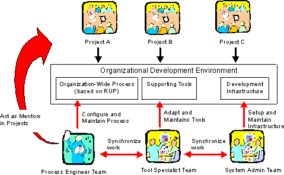

| Концепция: Среда разработки |
 |
|
| Связанные элементы |
|---|
Среда разработки проектаСредой разработки проекта по созданию программного обеспечения называется совокупность всего, что может потребоваться для разработки и развертывания системы, включая инструменты, рекомендации, процесс, шаблоны и инфраструктуру. Все эти объекты представлены в Rational Unified Process в виде следующих рабочих продуктов:
Среда разработки организацииЗачастую у компании, занимающейся разработкой программного обеспечения, много общего между разными проектами. В разных проектах одними и теми же способами используются инструменты. В разных проектах применяются схожие процессы, а некоторые рекомендации и вовсе идентичны. Поэтому организация может выиграть за счет создания группы, отвечающей за создание и обслуживание централизованной среды разработки, в состав которой будут входить единые для всей организации процесс, правила использования инструментов и инфраструктура. В группу поддержки среды входят инженеры, занимающиеся разработкой и обслуживанием единого для организации процесса. Применение единого процесса позволит сократить количество усилий по адаптации процесса для отдельных проектов, поскольку значительная часть адаптации будет проведена централизованно. Инженеры, занимающиеся разработкой центрального процесса, будут выступать в роли кураторов в индивидуальных проектах. В группу поддержки среду могут также входить специалисты по инструментам, настраивающие и обслуживающие инструменты поддержки. Специалисты по инструментам из этой группы могут помочь в настройке инструментов для конкретных проектов. Кроме того, в группу поддержки среды можно включить системных администраторов.  Разработчики процесса, специалисты по инструментам и системные администраторы создают централизованную среду разработки для организации. Среды тестирования
В большинстве случаев к средам тестирования предъявляются более конкретные, подробно расписанные и жесткие требования,
чем к средам разработки в целом. Обычно среды тестирования проще сред разработки с технической точки зрения, поскольку
они предъявляют меньше требований к аппаратному обеспечению. Кроме того, довольно часто для поддержки тестирования
применяются несколько сред с различными конфигурациями программного и аппаратного обеспечения, характеризующих
различные ограничения заинтересованных лиц. |
© Copyright IBM Corp. 1987, 2006. Все права защищены.. |